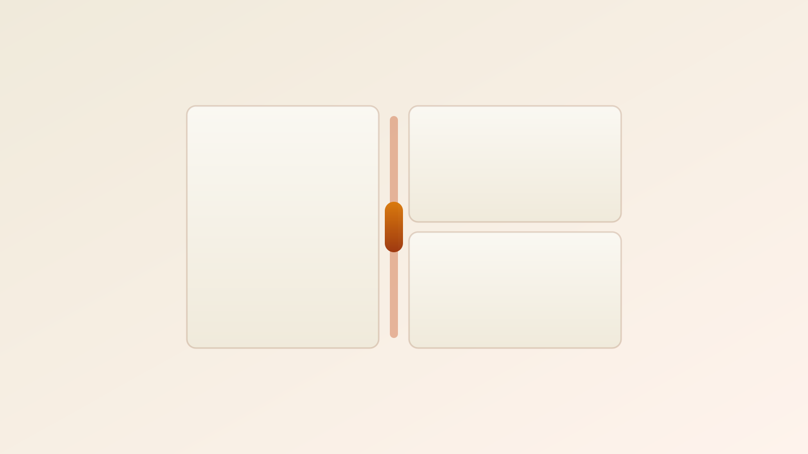

★★★
flexbox

Two libraries for dividing a screen into draggable, resizable regions — grades and forms side by side — judged axis by axis. Two bench players scored below the fold.
react-resizable-panels takes the default slot.
Unstyled, accessible, zero-dependency and the de-facto standard for app-shell splits. Reach for Allotment only when you want a VS Code look-and-feel with snap-to-zero and styled sashes out of the box — and can accept 6 transitive deps plus browser-only rendering. [1] [5]
useDefaultLayout seeds the layout, you persist via onLayoutChanged.dynamic(…, { ssr:false }).Long the "legacy" answer, but a v3.2.0 rewrite landed Feb 2026 — React 17/18/19, TypeScript-first, hooks-based. Fine for a plain draggable divider; thinner feature set (no built-in collapse/snap parity) and a smaller ecosystem. [8] [9]
Resizes a single element via edge/corner handles — not the boundary between two siblings a grid-vs-form layout needs. Popular and maintained, but use it for individually resizable widgets, not screen division. [10]